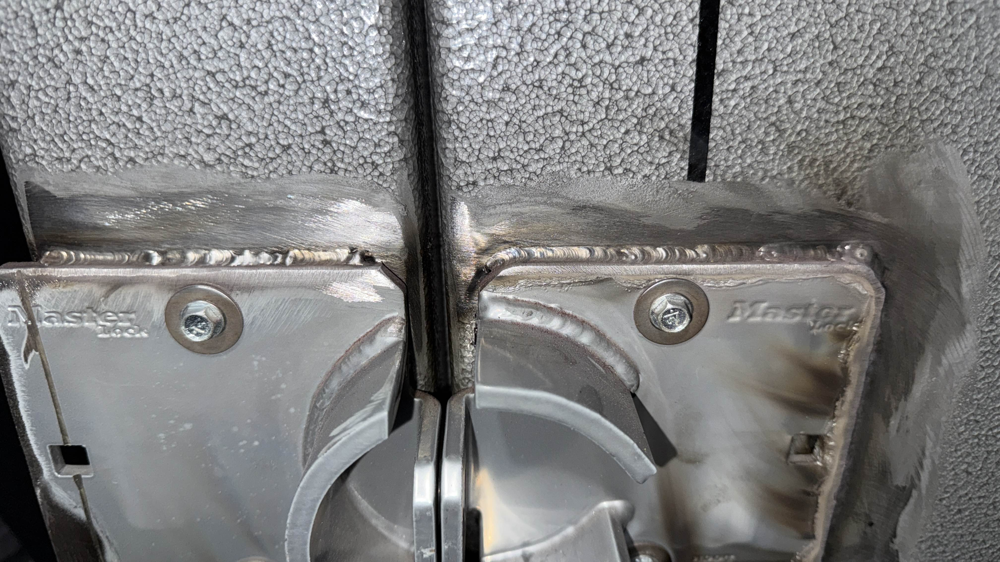
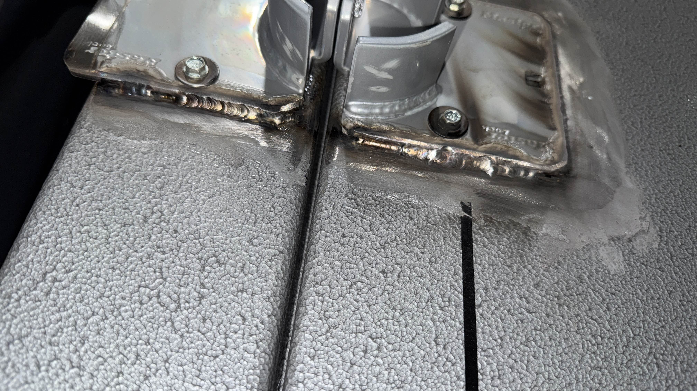

A topic that I find quite interesting as of recently has actually been looking into TIG Welding as that has been my most recent skill/hobby that I have been pursuing. Honestly, it has been quite a lot of fun tinkering around and trying to see which settings work best for me. If you ever get into TIG welding, I'd recommend purchasing the PrimeWeld TIG 225X machine. I honestly have had so much fun with it! Here's a link for you to check it out, I know it sounds scary or too "blue collar" at first, but...check out this link and let me know what you think! PrimeWeld 225X There are also quite a lot of accessories to buy. If you are going to weld Stainless Steel you have to make sure you get the correct filler rod and grab the correct lens for the torch you are using. Personally I use a CK17 torch, but I like to run a gas lens for my argon flow. My cup size is around 16. Here's a link to the cup I use if you would like to check it out! Furick BBW16 Cup A lot of people assume welding is hard work and not very fun, but I just did my first weld job on a safe this past weekend and honestly it was pretty fun! I welded up a safe that needed a new lock on it, I don't think my girlfriend's dad will be able to get that lock off now! Check out some of these welds that I have done:
 